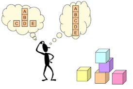
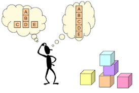

Objetivo
El objetivo de este OVI es brindar una correcta descripción acerca de los métodos de ordenación y su importancia en la programación orientada a objetos.

El objetivo de este OVI es brindar una correcta descripción acerca de los métodos de ordenación y su importancia en la programación orientada a objetos.
Cuando almacenamos los datos en una estructura ya sea en un vector, tabla, matriz o cualquier otra; por lo general el ingreso de la información no tiene ningún orden.
Al momento de buscar algún dato tendríamos que recorrer a veces toda la estructura para encontrarlo, por esto es necesario tener la información ordenada.
Existen métodos sencillos donde comparamos cada elemento con los demás, así si nuestra estructura tiene 50 elementos haremos 2500 comparaciones (50 x 50)
Se dice que un método es más eficiente que otro midiendo las comparaciones e intercambios que realiza para ordenar la estructura.
Estos métodos nos brindan la ventaja de tener un orden en nuestros datos e información.
Entre los métodos de ordenación hay tres que sobresalen por su eficiencia y simpleza al momento de ordenar y estructurar: Método de Burbuja, Método de Inserción y Método de Selección.